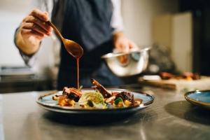

Sabores auténticos
El turismo gastronómico se enfoca en descubrir la cultura de un país a través de su comida, ferias gastronómicas y tradiciones culinarias.
¿Qué es el Turismo Gastronómico?
Es una forma de turismo que permite conocer la identidad cultural de una región a través de sus platillos típicos, ingredientes locales y formas de preparación tradicionales.
Pupusas
Platillo típico salvadoreño elaborado con masa de maíz y rellenos como queso, frijoles o chicharrón.
Yuca frita
Tradicional en ferias y mercados, se sirve con curtido y chicharrón.

Mariscos
Platillos frescos preparados en zonas costeras, ideales para quienes disfrutan los sabores del mar.
Beneficios del Turismo Gastronómico
- 🍽️ Preserva la cultura y tradiciones locales
- 🤝 Apoya a emprendedores y pequeños negocios
- 🌎 Atrae turistas nacionales e internacionales
- 📸 Ofrece experiencias únicas e inolvidables
¡Explora nuevos sabores!
Descubre rutas gastronómicas, festivales y platillos que conectan con la esencia cultural del país.